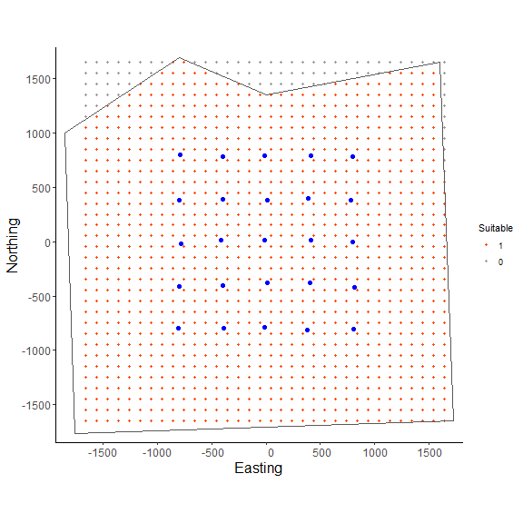

Mark-resight models: continuous state-space with both marked and unmarked individuals
Daniel Eacker
2022-04-27
mark_resight_scr.RmdIntroduction
The third vignette of the ‘localSCR’ package builds on ‘classic’ Bayesian spatial capture-recapture (SCR) models to introduce the spatial mark-resight model (Royle et al. 2014). The data consist of some counts of ‘unmarked’ individuals where individual identity is not possible along with ‘marked’ individuals that can be individually identified. We’ll present the case where there are an unknown number of ‘marked’ individuals, but there is a slightly different approach when there are a known number of marked individuals (e.g., collared animals picked up on camera; see Royle et al. 2014). In this mark-resight model, the marked and unmarked encounter model likelihoods share encounter rate and scaling parameters, where the marked data provide the majority of the information. In our analysis here, these models assume a uniform distribution of activity centers (i.e,. a continuous state-space). Although many distance detection functions are possible, the package currently includes only a bivariate normal model of space use, which is commonly employed in the literature. The package is meant to ease implementation of Bayesian SCR models using the ‘nimble’ package (de Valpine et a. 2022), which allows for increased flexibilty with the ability for the user to include custom functions and assign different algorithms to specific model parameters. I took advantage of this functionality with the goal of building a simple, straightforward workflow that was flexible enough to handle most mainstream SCR analysis problems. Visit https://r-nimble.org/download for information on installing ‘nimble’ and Rtools on your computer.
Implementation
The ‘localSCR’ package implements Bayesian spatial count models using the ‘nimble’ package (de Valpine et a. 2022) following methods described in Royle et al. (2014). We take advantage of recent developments in computation of SCR models. In this tutorial, three methods are implemented to decrease computational run time:
- Block updating of x and y activity center coordinates (Turek et al. 2021)
- Using vectorized declarations for traps in distance function calculations
- Separating the data augmentation process into two steps for marked indivdiuals (Chandler 2018)
In some SCR problems, there are landscape features that create ‘unsuitable’ habitat for the study species. Habitat masks are used to account for these features and designate suitable (1) or unsuitable (0) habitat, and can be represented as a matrix or array of binary values. We follow the methods of Milleret et al. (2019) to implement the “ones” trick to account for habitat suitability. This restricts the possible locations of latent activity centers to only suitable habitat. The ‘localSCR’ package provides functions to construct a habitat mask from either raster or polygon data.
Turtorial
This tutorial includes four parts:
- Create traps (or detectors), state-space grid and extent, and habitat mask
- Simulate ‘classic’ SCR data for marked individuals
- Simulate spatial count data for unmarked individuals
- Workflow for spatial mark-resight with 2-D trap array and habitat mask
Functions used from ‘localSCR’ package:
-
customize_model()delete and/or append lines from model code -
get_classic()grabs template model for given inputs using thenimbleCode()function -
get_unmarked()grabs spatial count model for given inputs using thenimbleCode()function -
grid_classic()define state-space grid and extent -
initialize_classic()generate starting locations for activity area centers -
mask_polygon()create habitat mask matrix or array from polygon -
nimSummary()summarize lists of Markov Chain Monte Carlo (MCMC) output -
realized_density()generate realized density surface from MCMC output -
rescale_classic()rescale inputs to prepare data for using habitat mask -
run_classic()wrapper function to run classic models using ‘nimble’ package -
sim_classic()simulate basic spatial capture-recapture data
# load 'localSCR' package
library(localSCR)
#> Loading required package: nimble
#> nimble version 0.12.2 is loaded.
#> For more information on NIMBLE and a User Manual,
#> please visit https://R-nimble.org.
#>
#> Attaching package: 'nimble'
#> The following object is masked from 'package:stats':
#>
#> simulate(1) Create traps (or detectors), state-space grid and extent, and habitat mask
# simulate a single trap array with random positional noise
x <- seq(-800, 800, length.out = 5)
y <- seq(-800, 800, length.out = 5)
traps <- as.matrix(expand.grid(x = x, y = y))
set.seed(200)
traps <- traps + runif(prod(dim(traps)),-20,20)
mysigma = 300 # simulate sigma of 300 m
mycrs = 32608 # EPSG for WGS 84 / UTM zone 8N
pixelWidth=100 # define pixelWidth or grid resolution
# create state-space
Grid = grid_classic(X = traps, crs_ = mycrs, buff = 3*mysigma, res = pixelWidth)
# create polygon for habitat mask
library(sf)
poly = st_sfc(st_polygon(x=list(matrix(c(-1765,-1765,1730,-1650,1600,1650,0,1350,-800,1700,
-1850,1000,-1765,-1765),ncol=2, byrow=TRUE))), crs = mycrs)
# create habitat mask
hab_mask = mask_polygon(poly = poly, grid = Grid$grid, crs_ = mycrs,
prev_mask = NULL)
# make ggplot of grid/habitat mask and trap locations
library(ggplot2)
grid_data = data.frame(x=Grid$grid[,1],y=Grid$grid[,2],Suitable=as.factor(as.vector(t(apply(hab_mask,2,rev)))))
# make 1 as the baseline level for plotting
grid_data$Suitable= factor(grid_data$Suitable, levels = c("1","0"))
# ggplot
ggplot() + geom_point(data=grid_data,aes(x=x,y=y,fill=Suitable,color=Suitable),
size=1.25) +
geom_point(data=as.data.frame(traps),aes(x=x,y=y),color="blue",size=2) +
theme_classic() + ylab("Northing") + xlab("Easting") +
geom_sf(data=poly, fill = NA) + coord_sf(datum=st_crs(mycrs)) +
scale_color_manual(values = c("orangered","gray60")) +
scale_x_continuous(expand=c(0.025, 0.025)) +
scale_y_continuous(expand=c(0.025, 0.025)) +
theme(axis.text = element_text(size=12),axis.title = element_text(size=16))
Here, we use the same approach as in the first vignette in creating the state-space from grid_classic(). Again, the traps (or detectors) are plotted over top of the grid in blue. We see the effect of the habitat mask shown here as red-orange points for suitable habitat and gray for unsuitable habitat; we also see the polygon used for the habitat mask plotted over top. We arbitrarily chose a grid resolution of 100 in this example (i.g., res = 100), but this will vary by problem. In most situations, it is prudent to test the effect of different grid resolutions on the estimated abundance and density in SCR models (see Royle et al. 2014). Also, note the use to the EPSG code to define the coordinate reference system for our state-space (see https://epsg.io/32608).
sim_classic(). Importantly, we use enc_dist = "poisson" to select the Poisson distribution to simulate counts rather than binary data. We will use this simulated data to produce our spatial count data of unmarked individuals. Note for this example, we will simulate a ‘true’ population size of 100 marked individuals (N = 100), 4 sampling occasions (K = 4), a scaling parameter (sigma_) of 300 m, a baseline encounter rate of 0.15 (base_encounter = 0.15), no sex-specificity (prop_sex = 1), and no habitat mask (hab_mask = FALSE). We also use setSeed = 100 to make the simulation reproducible. Again, we provide the function the extent of the state-space output from grid_classic() as ext = Grid$ext. Note that Grid is a list.
(2) Simulate ‘classic’ SCR data for marked individuals
# simulate marked data
data_m = sim_classic(X = traps, ext = Grid$ext, crs_ = mycrs,
sigma_ = mysigma, prop_sex = 1,N = 100, K = 4,
base_encounter = 0.15, enc_dist = "poisson",
hab_mask = hab_mask, setSeed = 100)
# inspect simulated data
str(data_m)
#> List of 3
#> $ y : int [1:100, 1:25, 1:4] 0 0 0 0 0 0 0 1 0 0 ...
#> $ sex: int [1:100] 1 1 1 1 1 1 1 1 1 1 ...
#> $ s : num [1:100, 1:2] -657 -828 178 -1515 -108 ...
#> ..- attr(*, "dimnames")=List of 2
#> .. ..$ : NULL
#> .. ..$ : chr [1:2] "sx" "sy"
We can see the data list data_m contains 3 elements: the encounter data y, a vector of for sex, and the simulated activity centers s. We really only need the encounter data since we do not have any sex-specificity to the analysis problem here. Next we create another marked data set and then covert it to unmarked by summing over traps and occasions.
(3) Simulate spatial count data for unmarked individuals
# simulate marked data (we use a different 'setSeed' to produce different data)
data_u = sim_classic(X = traps, ext = Grid$ext, crs_ = mycrs,
sigma_ = mysigma, prop_sex = 1,N = 100, K = 4,
base_encounter = 0.15, enc_dist = "poisson",
hab_mask = hab_mask, setSeed = 500)
# Covert to unmarked data
# sum over traps and occasions to produce a 2-dimensional spatial count data set
n = apply(data_u$y, c(2,3), sum)
# inspect n[j,k]
str(n)
#> int [1:25, 1:4] 1 3 2 0 0 1 0 0 0 1 ...
We can see the marked data were transformed from a 3-dimensional array (y[i,j,k]) to a 2-dimensional array (n[j,k]) by summing over individuals, creating our unmarked data set called n.
Next, we’ll create the data and constants lists and all other items needed to initialize our mark-resight model. We will use initialize_classic() to generate plausible starting activity center locations for all individuals. Note that because some individuals are marked and some are unmarked, that we’ll need to separately intialize the starting locations for each data set. We’ll use the all_random = TRUE argument in initialize_classic() to generate all random locations for our unmarked data. Given our simulated population size of 100 marked and 100 unmarked individuals, we specify the augmented population size for each data set at 200 (M = 200 andm = 200); this results in a total augmented population size of 400 individuals
(4) Workflow for spatial mark-resight with 2-D trap array and habitat mask
# we'll use the traps, state-space, habitat mask, and
# data sets from above rather than recreating them here
# Prep marked data
# marked augmented population size
M = 200
# get initial activity center starting values for marked individuals
s.st_m = initialize_classic(y=data_m$y, M=M, X=traps, buff = 3*max(mysigma),
hab_mask = hab_mask)
# rescale inputs
rescale_list_m = rescale_classic(X = traps, ext = Grid$ext, s.st = s.st_m,
hab_mask = hab_mask)
# store rescaled starting activity center coordinates
s.st_m = rescale_list_m$s.st
# store rescaled extent
ext = rescale_list_m$ext
# Prep marked data
# unmarked augmented population size
m = 200
# get initial activity center starting values for unmarked individuals
s.st_u = initialize_classic(y=NULL, M=m, X=traps, buff = 3*max(mysigma),
hab_mask = hab_mask, all_random = TRUE)
# rescale inputs (note we'll use the traps and extent from above since
# they are the same for all individuals, and we'll just grab s.st)
s.st_u = rescale_classic(X = traps, ext = Grid$ext, s.st = s.st_u,
hab_mask = hab_mask)$s.st
# create constants list
constants = list(m=m, M = M,J=dim(data_m$y)[2], K=dim(data_m$y)[3],
n0 = length(which(apply(data_m$y,c(1),sum)!=0)),
x_lower = ext[1], x_upper = ext[2], y_lower = ext[3], y_upper = ext[4],
lam0_upper = 1,sigma_upper = 1000,
A = (sum(hab_mask)*(pixelWidth/100)^2),pixelWidth=pixelWidth)
# remove rows with no detections from marked data y
y = data_m$y[which(apply(data_m$y,1,sum)!=0),,]
# convert y to 2D encounter history
y = apply(y, c(1,2), sum)
# create combined data list
data = list(y = y,
n = n, X = rescale_list_m$X)
data$hab_mask = hab_mask
data$OK = rep(1,constants$M)
data$OKu = rep(1,constants$m)
# add z and zeros vector data for latent inclusion indicator for marked individuals
data$z = c(rep(1,constants$n0),rep(NA,constants$M - constants$n0))
data$zeros = c(rep(NA,constants$n0),rep(0,constants$M - constants$n0))
# define all initial values
inits = list(sigma = runif(1, 250, 350),s=s.st_m,su = s.st_u,
psi=runif(1,0.4,0.6),psiu=runif(1,0.4,0.6),
lam0 = runif(1, 0.05, 0.15),pOK=data$OK,pOKu=data$OKu,
z=c(rep(NA,constants$n0),rep(0,constants$M-constants$n0)),
zu=rbinom(constants$m,1,0.5))
# parameters to monitor
params = c("sigma","psi","psiu","lam0","N","Nm","Nu","D","s","z","su","zu")
# get 'classic' SCR model for marked data
scr_model = get_classic(dim_y = 2, enc_dist = "poisson",
sex_sigma = FALSE,hab_mask=TRUE,
trapsClustered=FALSE)
# get spatial count model for unmarked data
sc_model = get_unmarked(occ_specific = FALSE,
hab_mask=TRUE,trapsClustered=FALSE)
# now combine models to form spatial mark-resight
smr_model = customize_model(scr_model, sc_model)
# now write new model code to update smr_model lines
library(nimble)
add_model = nimbleCode({
Nm <- sum(z[1:M])
Nu <- sum(zu[1:m])
N <- Nm + Nu
})
# erase rows and insert add_model
# add new lines all to the same line (line 44 of the smr_model)
smr_model2 = customize_model(smr_model, append_code = add_model,
append_line=rep(44,3), remove_line = c(2:4,23:24,44))
# inspect mark-resight model (not run)
# smr_model2
library(tictoc)
tic() # track time elapsed
out = run_classic(model = smr_model2, data=data, constants=constants,
inits=inits, params = params,niter = 10000, nburnin=1000, thin=1, nchains=2, parallel=TRUE,
RNGseed = 500, s_alias=c("s","su"))
toc()
#> 175.6 sec elapsed
nimSummary(out, exclude_params = c("s","z","su","zu"), trace=TRUE,
plot_all = FALSE)
#> post.mean post.sd q2.5 q50 q97.5 f0 n.eff Rhat
#> D 0.206 0.041 0.141 0.202 0.300 1 123.795 1.057
#> N 220.077 43.200 150.000 215.000 320.000 1 123.795 1.057
#> Nm 110.097 20.580 77.000 108.000 158.000 1 217.391 1.018
#> Nu 109.980 27.535 65.000 106.000 172.000 1 156.183 1.078
#> lam0 0.143 0.039 0.081 0.139 0.221 1 236.030 1.056
#> psi 0.551 0.107 0.371 0.540 0.799 1 213.259 1.015
#> psiu 0.549 0.140 0.312 0.533 0.862 1 170.283 1.082
#> sigma 285.441 32.722 227.818 282.206 356.657 1 206.288 1.002

We can see from the MCMC output table and trace plots that convergence is pretty good. We could run this a little longer since model run time is relatively low at 3 minutes. Both abundance estimates are near the simulated values for marked (Nm = 100) and unmarked (Nu = 100) individuals and just slightly biased high. This is to be expected given that this is just one realization of the problem.
We’ve shown how the template models can be combined with customize_model(). This might take some trial and error, but the model could always be copied and pasted into the script and wrapped with the nimbleCode() function. For most smaller model editing problems the function should be useful. Note that in our modeling exercise above we used M for the total augmented population size for marked individuals and used m for unmarked individuals.
Now, let’s make a realized density surfaces for marked and unmarked individuals. Note that we could add the output rasters together to make a single realized density surface for overall density.
# generate realized density surface marked individuals
rm = realized_density(samples=out, grid=Grid$grid, crs_=mycrs,
hab_mask=hab_mask, z_alias = "z", s_alias = "s")
# generate realized density surface unmarked individuals
ru = realized_density(samples=out, grid=Grid$grid, crs_=mycrs,
hab_mask=hab_mask, z_alias = "zu", s_alias = "su")
# load needed packages for multiplot
library(viridis)
library(grid)
library(cowplot)
library(ggpubr)
library(rasterVis)
# plot raster for marked individuals
p1<-gplot(rm) + geom_raster(aes(fill = value)) +
scale_fill_viridis(na.value = NA, name="Density",
limits=c(0,0.3),breaks=seq(0,0.3,by=0.1)) +
xlab("") + ylab("") + theme_classic() +
scale_x_continuous(expand=c(0, 0)) +
scale_y_continuous(expand=c(0, 0)) +
theme(axis.text = element_text(size=18))
# plot raster for unmarked individuals
p2<-gplot(ru) + geom_raster(aes(fill = value)) +
scale_fill_viridis(na.value = NA, name="Density",
limits=c(0,0.3),breaks=seq(0,0.3,by=0.1)) +
xlab("") + ylab("") + theme_classic() +
scale_x_continuous(expand=c(0, 0)) +
scale_y_continuous(expand=c(0, 0)) +
theme(axis.text = element_text(size=18))
# arrange the two plots in a single row
prow <- plot_grid(p1 + theme(legend.position="none"),
p2 + theme(legend.position="none"),
align = 'vh',
labels = NULL,
hjust = -1,
nrow = 1
)
# extract the legend from one of the plots
legend_t <- get_legend(p1 + theme(legend.position = "top",
legend.direction = "horizontal",
legend.text = element_text(size=14),
legend.title = element_text(size=16)))
# add the legend above the row we made earlier. Give it 20% of the height
# of one plot (via rel_heights).
pcomb <- plot_grid(legend_t, prow, ncol = 1, rel_heights = c(.2, 1))
# add x and y axis labels
pcomb <-annotate_figure(pcomb, bottom = textGrob("Easting",
gp=gpar(fontsize=18), vjust = -1, hjust = 0),
left = textGrob("Northing", rot=90, gp=gpar(fontsize=18),
vjust = 1, hjust = 0.5))
pcomb

Nice job! You’ve made it through the third ‘localSCR’ tutorial. Please see Royle et al. (2014) for more details about spatial mark-resight modeling. The next tutorial will focus on discrete state-space models or inhomogeneous point process models.
References
Chandler, R. B. 2018. Speeding up data augmentation in BUGS. https://groups.google.com/forum/#!topic/hmecology/o6cWDqHHgOE.
de Valpine P, C. Paciorek, D. Turek, N. Michaud, C. Anderson-Bergman, F. Obermeyer, C. C. Wehrhahn, A. Rodrìguez, L. D. Temple, and S. Paganin. 2022. NIMBLE: MCMC, Particle Filtering, and Programmable Hierarchical Modeling. doi: 10.5281/zenodo.1211190 (URL: https://doi.org/10.5281/zenodo.1211190), R package version 0.12.2, URL:https://cran.r-project.org/package=nimble.
Milleret, C., P. Dupont, C. Bonenfant, H. Henrik Brøseth, Ø. Flagstad, C. Sutherland, and R. Bischof. 2019. A local evaluation of the individual state‐space to scale up Bayesian spatial capture‐recapture. Ecology and Evolution 9:352–363.
Turek, D., C. Milleret, T. Ergon, and H. Brøseth 2021. Efficient estimation of large‐scale spatial capture–recapture model. Ecosphere DOI:10.1002/ecs2.3385.
Royle, J. A., R. B. Chandler, R. Sollmann, and B. Gardner. 2014. Spatial capture‐recapture. Academic Press, Waltham, Massachusetts, USA.